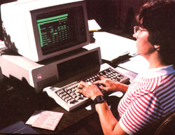

If you're interested in personal computers and paid "homework" ; you should consider . . .
The Age of the Home Computer has burst upon the 1980's with all the hoopla of a video game arcade. What with the appropriate shelves in libraries and bookstores groaning under the continuing influx of new material on the subject (and publishers are still hard pressed to keep pace with the rapidly developing technology), plus the increasingly familiar sight of computer retail stores at shopping centers everywhere, it apparently won't be long until home-sized electronic brains-like television sets before them-become the focal points of living rooms across North America.
Because of the rapidly spreading popularity of these "mini-minds", a number of subsidiary industries have sprung up. And one of these new markets presents opportunities for computer enthusiasts (or people with the potential to become proficient with the electronic wonders) who have a yen for program journalism to start freelancing for profit!
SOUGHT-AFTER SOFTWARE
As you probably know, a personal computer has to have a program to run: Without this software (a term which is "computerese" for the list of instructions the machine is supposed to follow), it'd be about as valuable as a stereo without a record. And although anyone with a "microthinker" should be able to write problems for it, most folks don't have the time or the inclination to create their own software . . . they'd really rather buy what they need from someone else. So as the price of home units continues to come down (as is currently the trend), microcomputers are going to be more accessible to a greater number of consumers than ever before . . . and the demand for software just might skyrocket! Already, the need for new programs far exceeds the available supply.
If you've been keeping up with the news, you're probably aware that people of all ages are currently exploring this new marketplace. And when you realize that a lot of folks are getting paid anywhere from $2.00 to $200 apiece for simple games-and $500 or more for business-related packages-it's certainly not hard to see why computer program writing for profit is an attractive field!
COMPETENT COMPUTING
Many individuals have likely shied away from creating programs because they assumed that success was beyond the reach of anyone except "whiz kids" such as Daniel Bricklin and Robert Franstan, who-in 1978-pooled $16,000 to found the highly successful software company they called VisiCalc (it's now referred to as VisiCorp and earns over $2,000,000 a year!) . . . or the 16-year-old enthusiast in California who wrote a game program that has brought him over $100,000 in earnings.
However, fear not . . . plenty of hardworking folks have found that program freelancing is a fine way to supplement a regular income ... even though the big-money sales may be few and far between.
Take Bob Dallman, for instance . . . a high school physics teacher from Indiana who first became intrigued with computers when his school bought four for classroom use. After only a week of instruction from the hardware salesperson, Bob sat down and wrote out four simple programs for student use . . . and before he knew it, he was hooked! He just couldn't get enough borrowed time at the school computers to suit his needs, so Dallman went out and invested $2,200 in a home system for himself.
Then, in order to justify his new obsession, Bob submitted his programs to a software company he saw advertised in a computer magazine. He figured that-just may be-he'd be able to sell one or two . . . but instead, the firm bought them all! And so far (over the course of a year), the teacher has earned about $750 in royalties, with more coming in . . . not bad when you consider that he spent a total of only about 12 hours on writing the four programs.
FOR MEN ONLY?
As another example, consider North Carolina's Linda Brown, who's the wife of an IBM employee and the mother of two daughters. Since she'd been trained in computer programming during a previous job in research, it was only natural that-when the family budget needed boosting-Linda decided to call upon her program-writing skill to help out. She purchased an IBM personal computer . . . and now (just six months later) she's an avid, wellpaid freelancer, working out of her own den!
Ms. Brown's specialty is creating business packages, which she prepares for companies (including a leading soft-drink producer) who commission her to tailor-make programs for their specific needs. Usually, her payment is agreed upon beforehand, as is the case with most contracted work. Once a buyer tells Linda the sort of package required, she figures up how much time she thinks it'll take to do the job . . . and quotes a price. If the company is happy with her estimate, she's off and writing!
Although many programmers can command $30 to $50 an hour for the kind of writing Linda tackles, she's still making a name for herself in what she feels is a male-dominated field, and asks only about $20 per hour for her services. (EDITOR'S NOTE: This is not to imply that most female programmers offer "bargain" rates. It's merely to point out that this one woman has found it necessary to undercut the going fee in order to keep herself in business.) However, even at that rate, Linda figures she's doing just fine . . . since preparing an average company package will take anywhere from three weeks to six months of six-hour days, working five days a week.
STARTING OUT . . .
As you can see, then, a market for freelancers does exist. But don't be blinded quite yet by dreams of huge dollar signs flashing on and off in computer-graphic color! Before you can be a success at this freelancing business, you've got to put in some learning time. First off, obviously, you must have access to a home computer, and your best bet is to go ahead and buy one if you can afford to. (See the price information at the end of this article.)
But that's only the beginning. Don't assume that you'll be able to sit down with the instruction book and "talk" to your new machine immediately. Far from it! The sort of knowledge required to operate a microcomputer is best learned through handson experience, gained under the guidance of a qualified instructor. So find a competent friend to help . . . or enroll in a course, either at the store where you purchased your hardware or at a local college. The few extra dollars that it'll cost you to learn proper and effective programming will be more than paid back (in avoided frustration, at the very least) over the long haul.
MAXIMUM MARKETING
Once you've learned to communicate with your computer, and after you've run off several practice programs, you can decide just what sort of software you want to create for sale. Current programs are generally classified according to five categories: personal and home . . . games . . . educational . . . business . . . and graphics. In the beginning, at least, it's best to select an area that you're fairly familiar with, and then research the market before you actually set to work. (After all, there's no point in creating a program that duplicates one already available.)
When choosing a subject area, though, you might want to keep in mind that thousands of video games are born every day, and-unless you're ready to buck some stiff competition-you're likely better off working up something other than games . . . a good practical home budget program, for instance. (Surprisingly enough, there's still a dearth of this type of software.)
THINK COMPUTERESE!
Since a program is simply a detailed set of instructions that tell a computer what to do, you must be extremely careful-when writing one-to document every step of the instructions . . . in a manual for the potential computerite, and in either cassette tape or floppy disk form for the "micromind" it self. Don't skip from Point A to Point C under the assumption that Point B is too obvious to mention . . . it may not be equally clear to someone else. You can be sure that many of your potential customers will be less proficient than you . . . and the simple omission of a single procedure could make your entire program inoperable in the hands of a beginner.
There's another factor to consider in choosing your slice of the software business pie: There is no universal computer language. Now most programs are written in some form of BASIC (which is currently the most commonly used and easy-to-learn computer lingo, although others are already catching on) . . . but BASIC varies from one firm's computer to another. For instance, if you write a program in Apple BASIC, the same program won't-without some revision-run in a TRS-80 . . . because even though that TRS-80 computes BASIC, it computes only TRS-80 BASIC. This fact is unfortunate in some ways, but it does mean that you can broaden your base of operations by learning to translate from one sort of BASIC to another and selling that service as well.
ALL DRESSED UP AND NOWHERE TO GO . . .
When your program is documented and recorded (it's a good idea to photocopy a practice printout to show a buyer . . . as proof that your system works), you're ready to try to sell the package. And if you keep up-as any freelance program writer should-with computer magazines (Personal Computing, Popular Computing, Byte, and others), you'll probably be able to locate a lot of software markets by simply perusing the ads in such periodicals.
In fact, you might want to take out an advertisement in one of these magazines yourself, and try to sell your product directly to users through the mail. The cost for ad space varies with the different publications, so be sure to compare rates.
Of course, if you do choose to take the mail order route, you'll be responsible not only for copyrighting your work (if you decide to attempt to protect it . . . something fewer and fewer programmers are bothering to do), but also for making as many copies of the manuals and tapes or disks as you think you'll need to fill your order. Still, if you don't mind the small financial risk and the trouble-and if you're patient and persistent-selling firsthand (with no middleman except the post office) could be the way to go.
SECURITY SOFTWARE
If, however, you'd rather not handle individual orders, you could attempt to market your computerware either to software companies (new ones are springing up daily) or to computer manufacturers (they're constantly trying to keep their hardware customers supplied With new software). Both of these potential groups of buyers advertise in computer magazines . . . so leaf through a few issues to find the names and addresses of companies you might like to deal with. Then contact the firms to inquire about their rates and such.
It might pay to check with hardware retailers in your area, too, to see whether they know of anyone who needs a programmer locally. Many times these stores are clear inghouses for information of this sort, and the folks who manage them would probably be more than happy to help you out. Since they frequently offer classes in programming, some might even be interested in hiring you as an instructor! Anyway, it's worth a visit just to let them know who you are . . . what sort of programming you can do . . . and how they can get in touch with you if they need to.
RAINBOW CHASING OR INCOME EARNING?
Whether you decide to sell your wares outright or market them wholesale through someone else, you're likely to discover that the Age of Home Computers is rich with potential for the innovative go-getter. And even if you don't strike pay dirt by writing programs, you're sure to have a heck of a lot of fun-and pick up a good bit of knowledge-exploring the BASIC possibilities of program journalism!
EDITOR'S NOTE: Here are the approximate starting prices for some of the more popular models available, as listed in William Barden, Jr.'s Guidebook to Small Computers (published by Howard W. Sams, 1982, $6.95): Radio Shack TRS-80 Model 11, $3,500 . . . Apple II and Atari, $1,000 . . . Pet, $600 . . . TRS-80 Model 1, $500 . . . and Timex Sinclair, $100.
If you can't find enough reading material at bookstores, newsstands, or libraries near you, you might want to write to Dilithium Press, Dept. TMEN, P.O. Box 606, Beaverton, Oregon 97075-or phone 800/547-1842-and ask for the firm's excellent (free) Brainfood Catalog of hooks on this subject.
|
 |
|
|